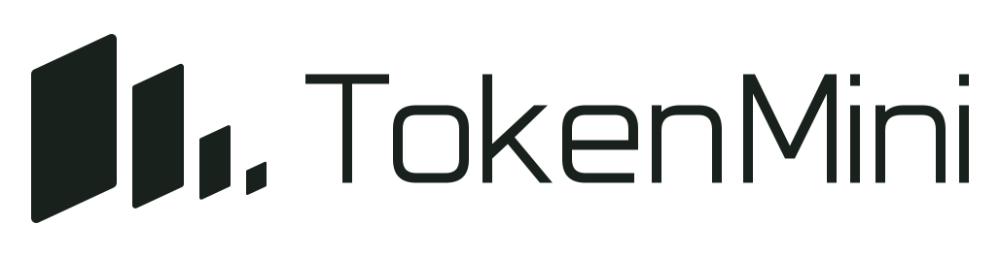
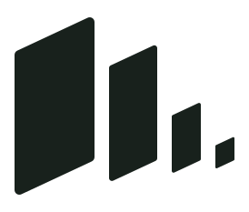
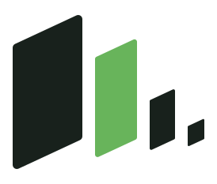
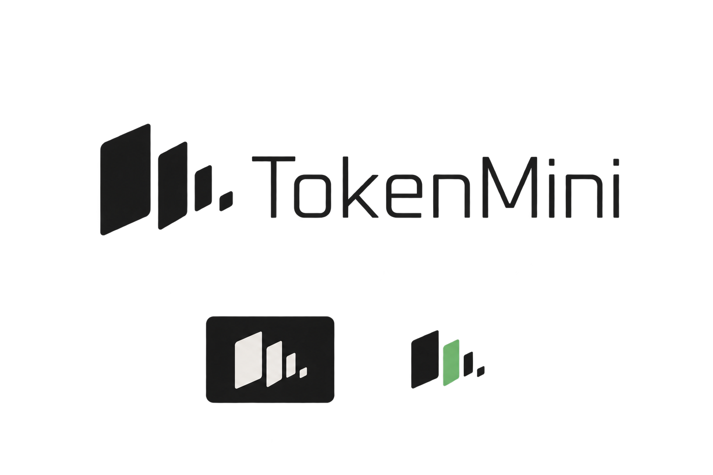
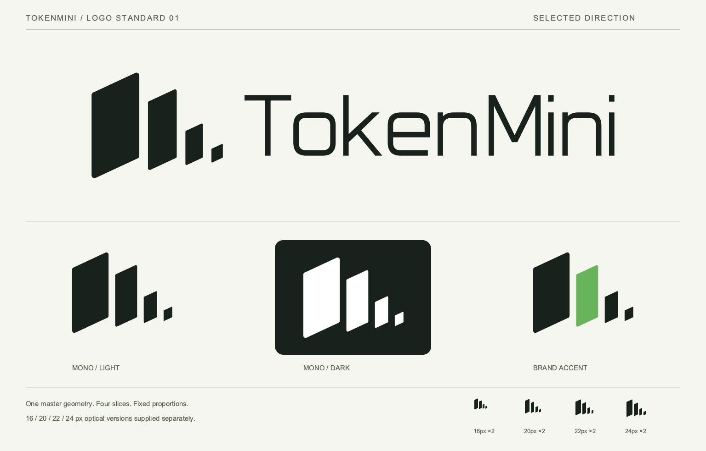

保留你选中的斜切片结构。统一倾角、间距、圆角与字标，并补齐单色、品牌色及小尺寸版本。


默认使用。用清晰轮廓建立识别。

与墨色版使用完全相同的形状。

颜色位置固定，不代表实时额度。
斜边统一 25°，竖边垂直。水平间隔 16u，右下端点共用一条基线；圆角随片宽按同一比例变化。
保留轻量、方圆几何的字形气质，重新绘制轮廓并固定字距。SVG 不依赖安装字体。
去掉光晕和生成纹理，使用实色。16–24px 单独加宽最小片和间隙，保留四片结构。
u 是母版的相对尺寸单位，不是像素。净空建议至少 32u；横向完整 Logo 建议宽度不小于 180 CSS px。


下面显示 16 / 20 / 22 / 24px 光学校正版，以及 32 / 48px 标准版。页面请用 100% 缩放查看。
这是一张本地尺寸示意，未安装到 macOS 菜单栏。标志保持静止，数值与状态由实际界面另外显示。
保持四片数量和顺序；不镜像、不旋转、不拉伸。深色底使用反白版。标准 Logo 不添加发光、描边或阴影。